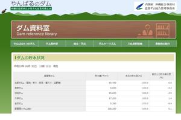
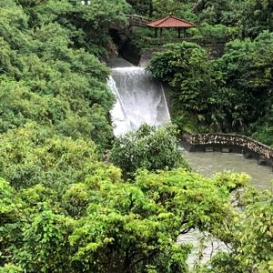
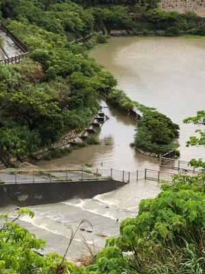
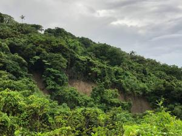
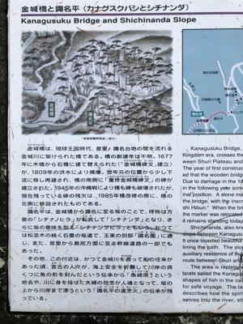
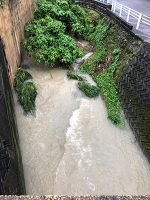
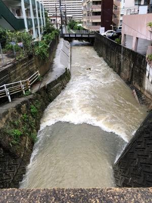

うるがいの話 ある日
最新:
ダム貯水量オール満点
うるがいとは 前提知識です
カニの画像をクリックすると『うるがいの話』サイトを表示します

うるがい(ｳﾙｶﾞｲ urugai)とは、『もずくがに』の名前でとても大きくなります。

たながー（ﾀﾅｶﾞｰtanagaa）とは手長えびのことで、何種類かあり大きいのは車
エビぐらいになります。

ぶながー(bunagaa)とは、赤い髪の毛、赤い身体、そして身長は１ｍ２０ｃｍ
ぐらい、川の蟹を食べているの目撃された。場所は沖縄県国頭郡大宜味村のと
ある村僕の隣近所に住んでいる爺さんから、聞いた話です。
2021年06月30日 (水）ダム貯水量オール満点
16:53







とうとう、やんばるダムの貯水率がすべてのダムで１００％になった。ダムか
ら水が溢れ出している。昨日の夕方、雨が上がった時間に傘をさして歩いたが
今日は、ダメだ、諦めるとする。暇人になった私は、夜は録画等でテレビを見
て過ごす。途中の４回目（再就職先「葬儀屋」）からみはじめた「定年女子」
ドラマ（８回の再放送はすでに終了した）突然役職定年で５３歳で会社を辞め
てしまった設定だと、既に視聴２巡目のヨメから教わった。私も近親の葬儀が
重なったり、ハローワークや、親の介護、子供の離婚騒動など重なるところが
面白かった。ヨメのお義母さんは痴呆ではないものの会う度に「生きててもし
ょうがない、なんで生きているのかね・・・」とヨメと私に愚痴る。ヨメ曰く
もともと性格悪いし、ん、そう思うでも親だし、痴呆で暴られるよりはマシだ
ヨ、この状態がいつまでつづくのかね、寝込んだら変わるんだろう・・・・。
ワクチンで年内にコロナ禍が良くなるかな、来年には仕事をスルベ。年末には
またハローワークへ通うと考える。ただ、ドラマでもそうだがフル勤務ではな
く、パートもあり。近いうちにくる、お義母さん騒動のためにと考える。とこ
ろで役職定年って今時もあるのかとネットで調べた。あるようだ、もともとは
５５歳を定年していた企業が一般的だったことが背景にあるらしい、私が社会
人になった頃には「６０歳定年制」で、今は６５歳まで雇用機会を確保しなけ
ればいけないとなっている、さらに公務員定年６５歳が改正法成立した。平成
１２年（西暦２０００年）の法律改正で、老齢厚生年金の支給開始年齢が、そ
れまでの６０歳から６５歳に引き上げられることになったのがその原因である
その当時、世の中は２０００年問題で大騒ぎ、私はこんな事が世の中で起きて
いると全く知らなかった。２０１０年とある資格試験のため、新宿で研修を受
けた。講師はＩＢＭを定年退職し（アメリカでの海外勤務あり）、年金を貰え
るまでのつなぎとして働いていると話した、お！、そうなんだ。年金で６５歳
からか・・・。退職後、健康保険は国民年金のつもりだったが市役所で、前の
職場の任意継続を利用したほうがいいと、支払金額が安いと勧められ結局前の
職場の保険組合を利用している。ヨメの扶養者認定確認調書が来た、年間収入
の欄にわずかだが年金受給の金額を記入する。少し早く生まれたヨメは厚生年
金と企業年金が、去年の末あたりから支給された。私は６４歳かららしい・・
知り合いの会社で５５歳で役職定年になりました！これからひらで頑張ります
と言っていた人がいたが、今はどうしているのだろうと、友達に尋ねると会社
にまだいると事。子供には、あんたなんか時代は、働ける間は一生はたらかな
いと！言っている。年金支給開始を６８歳へ、さらに７０歳と伸ばす話もあ
るようだでとんでもないと思うが。